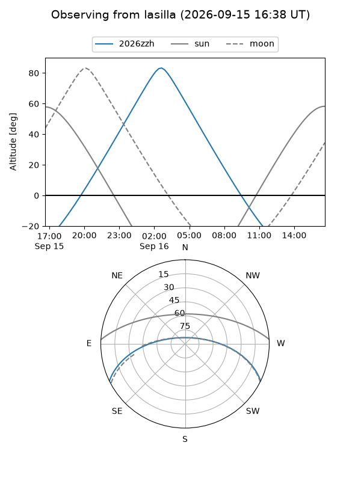
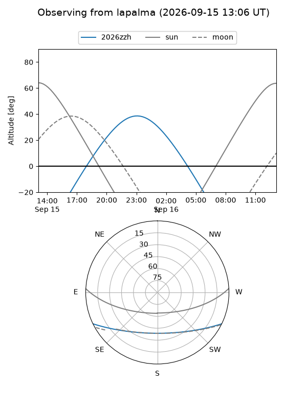
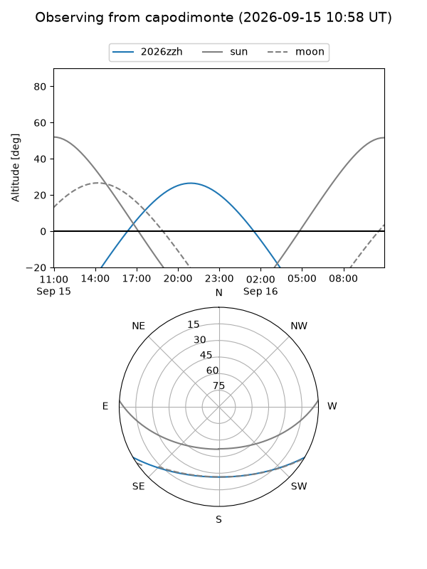
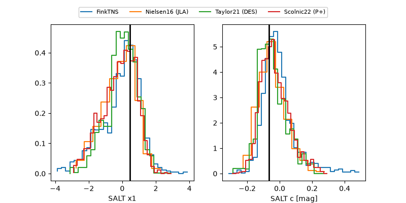

2026zzh
Target 2026zzh at 2026-09-16 01:40
Aliases and brokers:
FINK-ZTF: ztf.fink-portal.org/ZTF26abrfhru
Lasair-ZTF: lasair-ztf.lsst.ac.uk/objects/ZTF26abrfhru
ALeRCE-ZTF: alerce.online/object/ZTF26abrfhru
YSE-PZ: ziggy.ucolick.org/yse/transient_detail/2026zzh
TNS name: wis-tns.org/object/2026zzh
Direct TNS query: direct search
alt names
ZTF26abrfhru (ztf,fink_ztf)
2026zzh (tns,yse)
ATLAS26kur (atlas)
Coordinates:
equatorial (ra, dec) = 322.5605,-22.71465
equatorial (HMS+DMS) = 21:30:14.52,-22:42:52.73
galactic (l, b) = (26.9012,-44.46620)
Flags:
TNS type: SN Ia
peak dt: +15.0
Photometry:
last atlasc=19.49, atlaso=19.36, ztfg=19.60, ztfr=19.43
3 atlasc, 1 atlaso, 9 ztfg, 8 ztfr detections
Lightcurve
Visibility



Additional plots
